Análise Paramétrica
Investigação sistemática da influência das dimensões geométricas da célula unitária e do substrato sobre a resposta eletromagnética e de ressonância das estruturas FSS.
Introdução
A análise paramétrica constitui uma etapa fundamental no projeto de superfícies seletivas em frequência, pois permite investigar de forma sistemática a influência das dimensões geométricas da célula unitária sobre a resposta eletromagnética da estrutura. No contexto das FSS, pequenas variações em parâmetros como comprimento, largura, espessura e periodicidade dos elementos metálicos alteram significativamente as propriedades ressonantes, deslocando a frequência central, modificando a largura de banda e influenciando a profundidade de rejeição ou transmissão. Essa abordagem é especialmente relevante em geometrias complexas, nas quais a relação entre forma e resposta em frequência não é trivial e, portanto, requer avaliação numérica detalhada para viabilizar o ajuste fino do projeto.
1. Análise Paramétrica Anel Quadrado
Para a análise paramétrica da geometria em anel quadrado, foram definidos previamente os parâmetros geométricos e do substrato que permaneceram fixos ao longo das simulações, de forma a isolar a influência da variação dimensional do elemento ressonante sobre a resposta eletromagnética da FSS. Assim, adotou-se \(p = 21\) mm, \(d = 16\) mm, \(w = 1\) mm, espessura do substrato \(h_{subs} = 1{,}52\) mm e permissividade relativa \(\varepsilon_r = 3{,}0\). Essa definição permite garantir uma base padronizada para a comparação dos resultados obtidos nas diferentes configurações analisadas, reduzindo a interferência de variáveis externas no comportamento da estrutura.
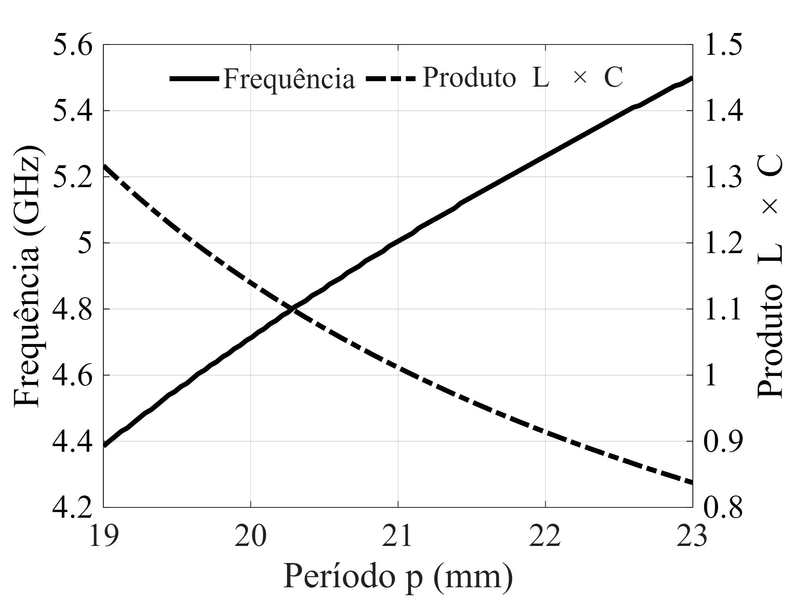
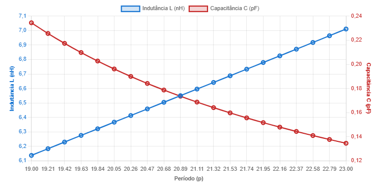
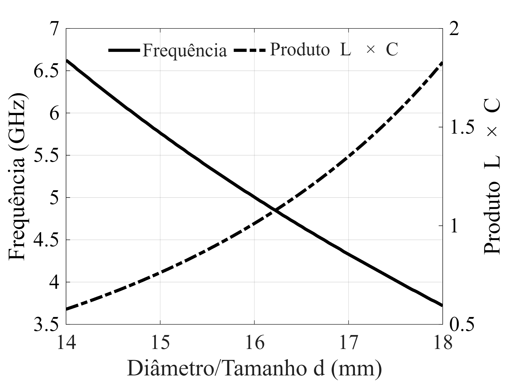
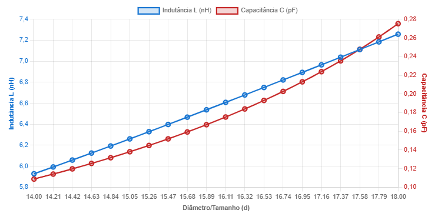
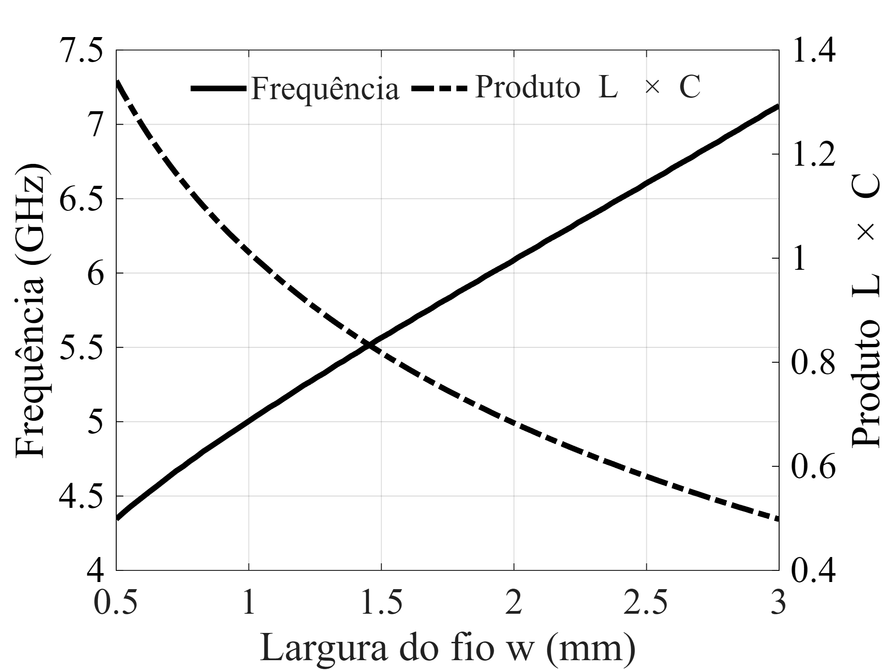
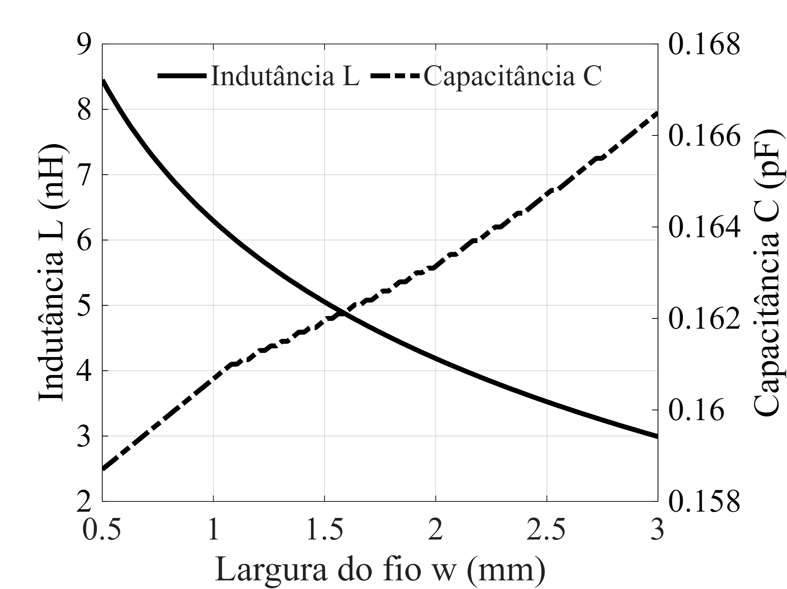
Os gráficos apresentados revelam o comportamento paramétrico da superfície seletiva em frequência, correlacionando de forma explícita as dimensões físicas da célula unitária com as flutuações das reatâncias concentradas (\(L\) e \(C\)) extraídas do modelo analítico. Tais variações são as responsáveis diretas pela sintonia da frequência de ressonância (\(f_{\mathrm{analítico}}\)).
Efeito da Variação da Periodicidade (\(p\))
As Figuras 1(a) e 1(b) ilustram a resposta da estrutura ao expandir a periodicidade \(p\) de 17 mm a 21 mm, mantendo a metalização estática (\(d = 16\) mm e \(w = 1\) mm). Observa-se um deslocamento quase linear da frequência de ressonância para regiões espectrais mais altas, acompanhado de uma queda suave do produto \(L \times C\).
Do ponto de vista analítico, o aumento de \(p\) implica diretamente o alargamento da fenda intercelular (\(g = p - d\)). A susceptância capacitiva é regida pela função de correção harmônica. O termo dominante desta função é o logaritmo natural da cossecante, \(\ln\!\left[\csc\left(\frac{\pi g}{2p}\right)\right]\). O alargamento de \(g\) aumenta o argumento da função seno, o que reduz o valor da cossecante e, consequentemente, atenua severamente o resultado do logaritmo. Fisicamente, o afastamento das células vizinhas enfraquece o acoplamento do campo elétrico de borda, derrubando a capacitância \(C\).
Simultaneamente, a indutância \(L\) também sofre decréscimo. A reatância indutiva é modulada pelo fator de escala da célula. Como o lado \(d\) permanece fixo, o aumento da periodicidade reduz o fator de preenchimento da matriz, atenuando a densidade de fluxo magnético por célula e diminuindo o armazenamento de energia indutiva. A queda combinada de \(L\) e \(C\) justifica o aumento contínuo de \(f_r\).
Efeito da Variação do Comprimento do Lado (\(d\))
A variação do lado externo do anel (\(d\)), mapeada nas Figuras 1(c) e 1(d), demonstra ser o mecanismo de sintonia mais sensível do projeto. O aumento de \(d\) de 15 mm para 19 mm, confinado num período fixo (\(p = 21\) mm), provoca um afundamento drástico e exponencial da frequência de ressonância.
Este fenômeno reflete um duplo somatório de efeitos reativos. Primeiramente, o aumento de \(d\) alonga a secção da trilha condutora polarizada ao longo do campo elétrico incidente, o que se traduz no aumento direto da indutância distribuída (\(L\)). Contudo, o impacto mais agressivo incide sobre a capacitância (\(C\)). O crescimento de \(d\) resulta no estreitamento abrupto da fenda intercelular (\(g \to 0\)). Matematicamente, à medida que o argumento \(\left(\frac{\pi g}{2p}\right)\) se aproxima de zero, a função seno tende a zero e a cossecante tende ao infinito. Esta singularidade analítica modela a acumulação extrema de densidade de carga elétrica (efeito de borda ou fringing field) entre as células sub-milimétricas. O crescimento exponencial da capacitância, atrelado ao aumento da indutância, eleva o produto \(L \times C\) vertiginosamente, tornando a expansão de \(d\) o método primário para forçar a miniaturização da estrutura.
Efeito da Variação da Largura da Trilha (\(w\))
As Figuras 1(e) e 1(f) descrevem o comportamento do espalhador frente ao engrossamento da fita metálica (\(w\)), avaliado de 0,5 mm a 2,5 mm. Este engrossamento desloca a ressonância para frequências substancialmente mais altas.
A análise do circuito equivalente isola perfeitamente a causa: a fenda principal da célula (\(g = p - d\)) não é alterada, preservando o comportamento espacial primário da capacitância transversal. O único fenômeno dominante passa a ser a queda acentuada da reatância indutiva. Observa-se a dependência logarítmica com a largura: \(\ln\!\left[\csc\left(\frac{\pi w}{2p}\right)\right]\). O alargamento de \(w\) proporciona uma área de secção superior para o escoamento das correntes de superfície. A menor restrição física à densidade de corrente diminui o campo magnético induzido ao redor da trilha, traduzindo-se em uma redução acentuada de \(L\).
Apesar de a capacitância primária da fenda se manter estática, nota-se nos dados da Figura 1(f) um crescimento muito tênue e residual de \(C\). O engrossamento da trilha altera a razão (\(w/p\)), o que diminui progressivamente o fator empírico de decaimento \(\alpha\). Uma menor restrição no expoente faz com que a estrutura sinta um \(\varepsilon_{\mathrm{ef}}\) sutilmente maior, provocando a leve elevação de \(C\). Entretanto, a massiva queda da indutância prevalece.
Efeito do Substrato Dielétrico (\(h_{\mathrm{sub}}\) e \(\varepsilon_r\))
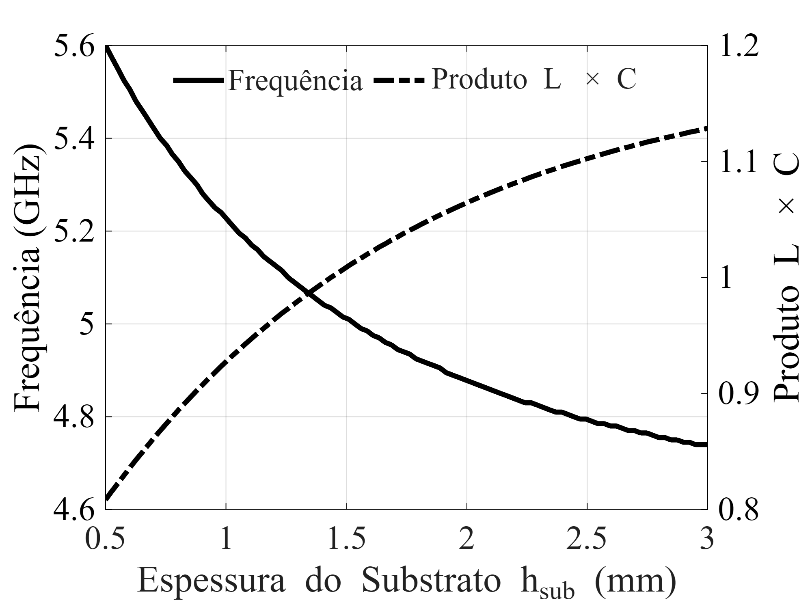
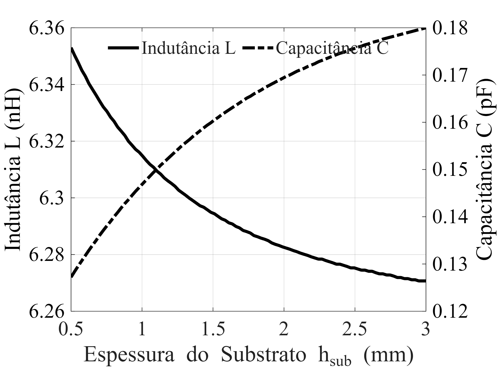
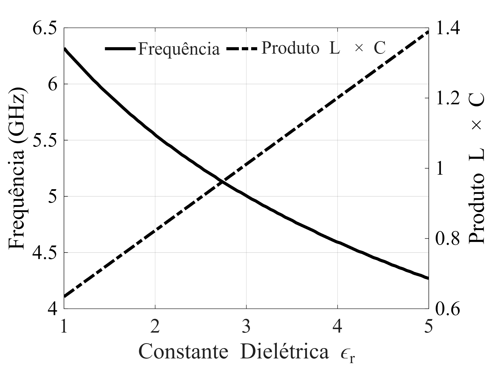
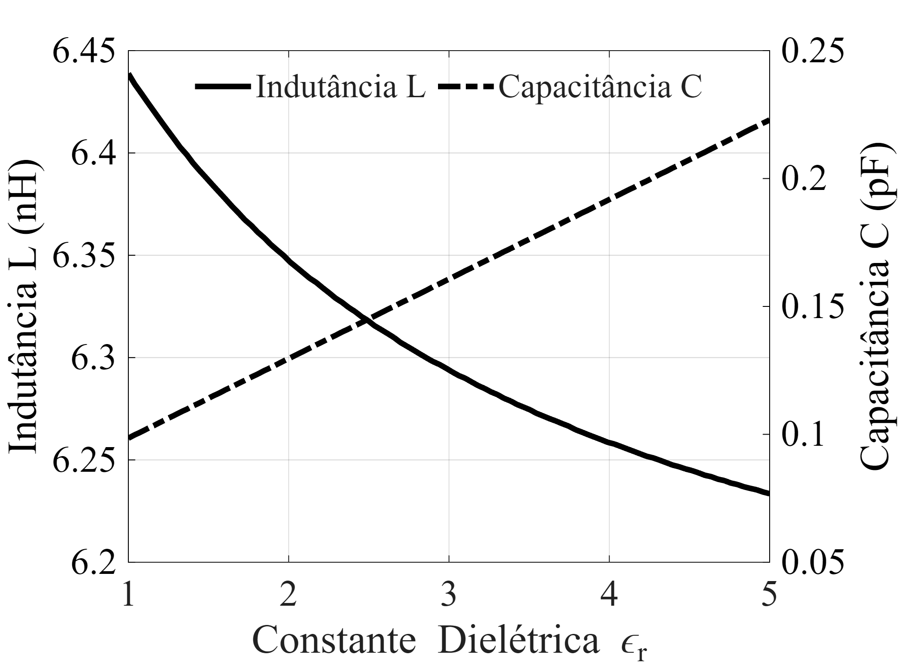
As Figuras 2(a) e 2(b) documentam o comportamento eletromagnético da FSS à medida que o substrato é espessado. O aumento de \(h_{\mathrm{sub}}\) provoca uma elevação inicial rápida na capacitância (\(C\)) e uma respectiva queda na frequência de ressonância, contudo, esse comportamento não se prolonga indefinidamente, estabilizando-se em uma assíntota horizontal evidente.
A justificativa para este teto de saturação encontra-se na função exponencial negativa de Costa. Para substratos fisicamente finos, grande parte do campo elétrico dispersa-se no espaço livre. Com o incremento de \(h_{\mathrm{sub}}\), o material dielétrico passa a englobar mais linhas de campo. Contudo, a partir do momento em que a espessura se torna eletricamente grande em relação ao período, ocorre o confinamento total do campo de borda. A capacitância \(C\) estaciona. Destaca-se o perfil rigorosamente plano e constante da indutância (\(L\)), comprovando que o fluxo magnético tangencial independe do dielétrico.
Em contrapartida, as Figuras 2(c) e 2(d) expõem a resposta frente à variação da constante dielétrica (\(\varepsilon_r\)). O aumento da densidade dielétrica atua como um multiplicador direto sobre a capacidade do meio em armazenar energia. Sendo a indutância (\(L\)) uma constante geométrica (linha plana), o produto \(L \times C\) acompanha o crescimento linear. A frequência de ressonância não é linear, mas segue a proporção exata do inverso da raiz quadrada do meio \(\left( f_r \propto 1/\sqrt{\varepsilon_{\mathrm{ef}}} \right)\).
2. Análise Paramétrica da Cruz de Jerusalém
A análise paramétrica da geometria Cruz de Jerusalém é particularmente relevante devido à complexidade das suas terminações capacitivas (chapéus), que introduzem graus de liberdade adicionais no projeto. Para garantir a rastreabilidade, os parâmetros base foram fixados em: \(p = 21\) mm, \(d = 10\) mm, largura \(w = 1\) mm, espessura do chapéu \(h = 1\) mm e fenda \(g = 1\) mm (Dielétrico: \(h_{\mathrm{sub}} = 1{,}52\) mm, \(\varepsilon_r = 3{,}0\)).
A Cruz atua classicamente como um ressoador de múltiplas bandas. Contudo, a presente avaliação foca exclusivamente no comportamento da primeira ressonância fundamental (\(f_{\mathrm{analítico}}\)), isolando o ramo principal do circuito LC em série.
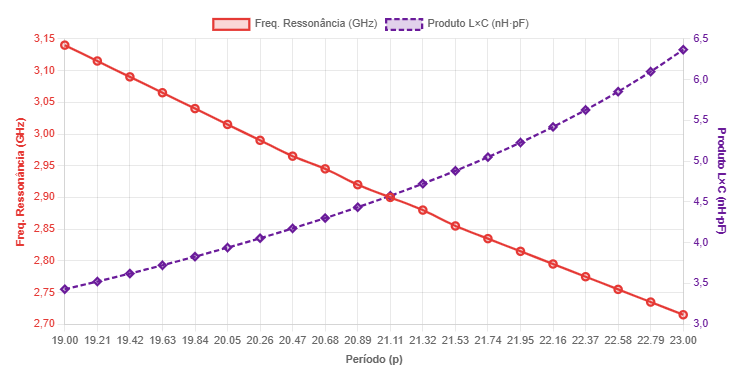
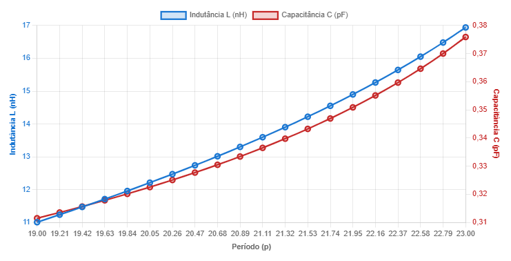
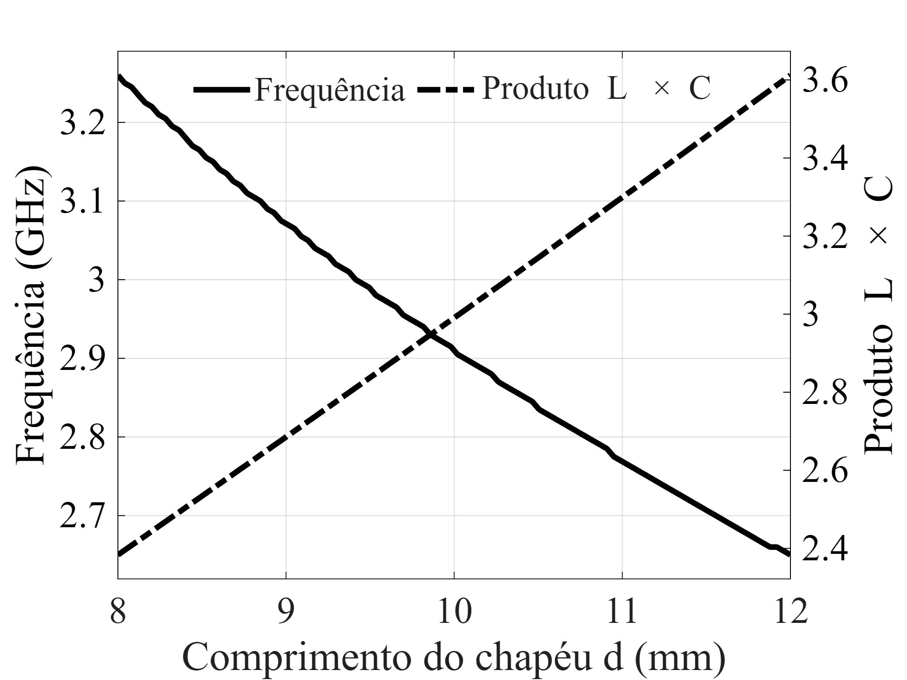
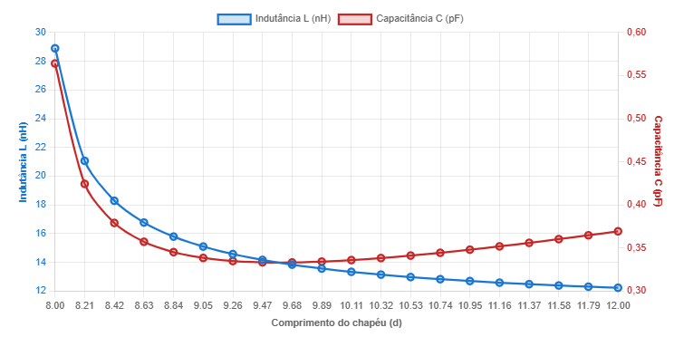
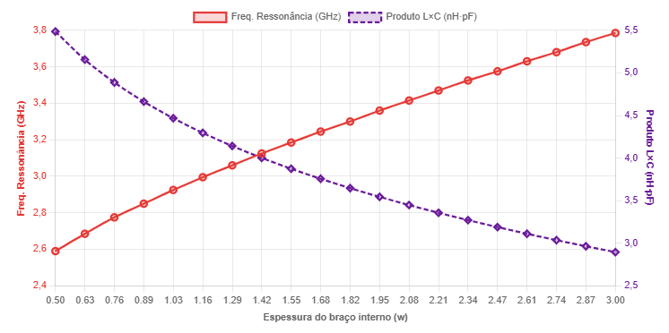
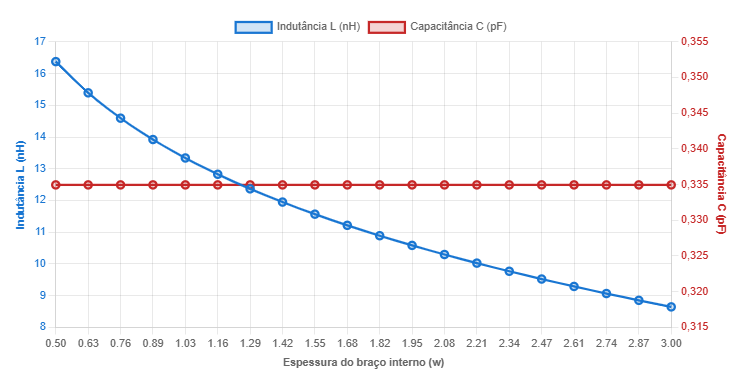
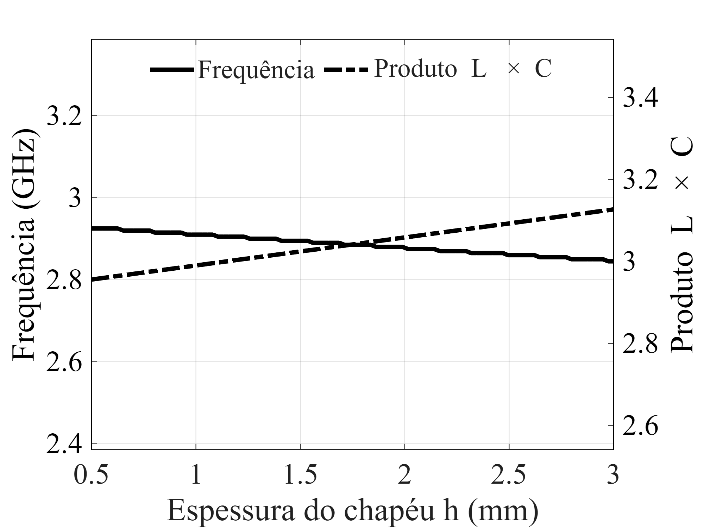
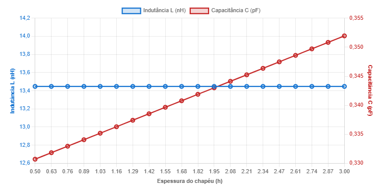
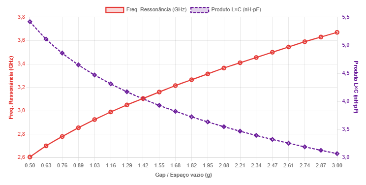
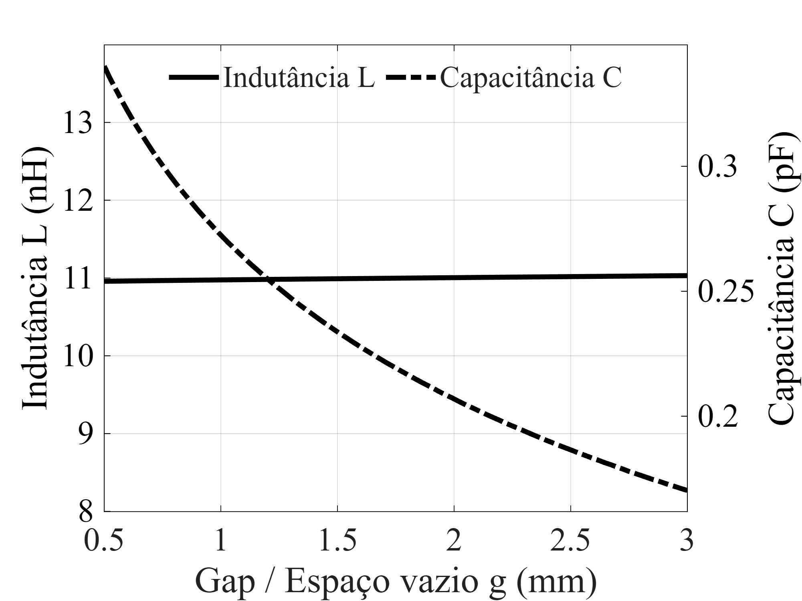
Efeito da Variação da Periodicidade (\(p\))
As Figuras 3(a) e (b) ilustram o efeito da expansão da periodicidade espacial (\(p\)). Observa-se um deslocamento acelerado da frequência de ressonância para patamares superiores. O aumento de \(p\) afasta os chapéus adjacentes, mitigando o confinamento elétrico. A queda aditiva da susceptância primária (\(B_g\)) e transversal (\(B_d\)) faz com que a capacitância total desmorone.
Efeito da Variação do Comprimento do Braço (\(d\))
O alongamento do braço (\(d\)) nas Figuras 3(c) e (d) evidencia o mecanismo mais agressivo de miniaturização. Conforme \(d\) cresce dentro de uma célula restrita, a ressonância despenca exponencialmente. A distância transversal entre chapéus adjacentes (\(p - d\)) tende a zero, traduzindo-se numa massiva concentração de densidade de carga na microfenda.
Efeito da Variação da Largura da Trilha (\(w\))
As Figuras 3(e) e (f) demonstram a resposta face ao alargamento da haste central (\(w\)). Como \(w\) não compõe as formulações capacitivas de \(B_g\) e \(B_d\), a capacitância (\(C\)) mantém-se praticamente constante. O alargamento de \(w\) oferece uma secção de escoamento maior para as correntes superficiais, reduzindo a indutância concentrada (\(L\)) e empurrando a sintonia para frequências mais altas.
Efeito da Variação da Espessura da Terminação (\(h\))
As Figuras 4(g) e (h) revelam que o aumento de \(h\) impõe uma sintonia fina redutora sobre a frequência. A alteração de \(h\) não impacta a geometria da fita central (mantendo \(L\) plana). O impacto é unicamente capacitivo transversal. Aumentar \(h\) alonga os chapéus paralelos, maximizando a área efetiva das placas do capacitor virtual e elevando \(B_d\).
Efeito da Variação da Fenda Intercelular Primária (\(g\))
As Figuras 4(i) e (j) analisam o distanciamento frontal através do alargamento da fenda \(g\). Distanciar as faces capacitivas destrói o fator de rejeição, reduzindo a susceptância horizontal (\(B_g\)) e desidratando a capacitância global (\(C\)).
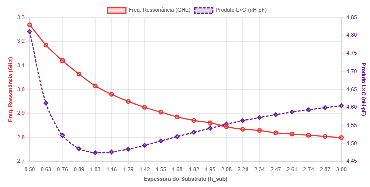
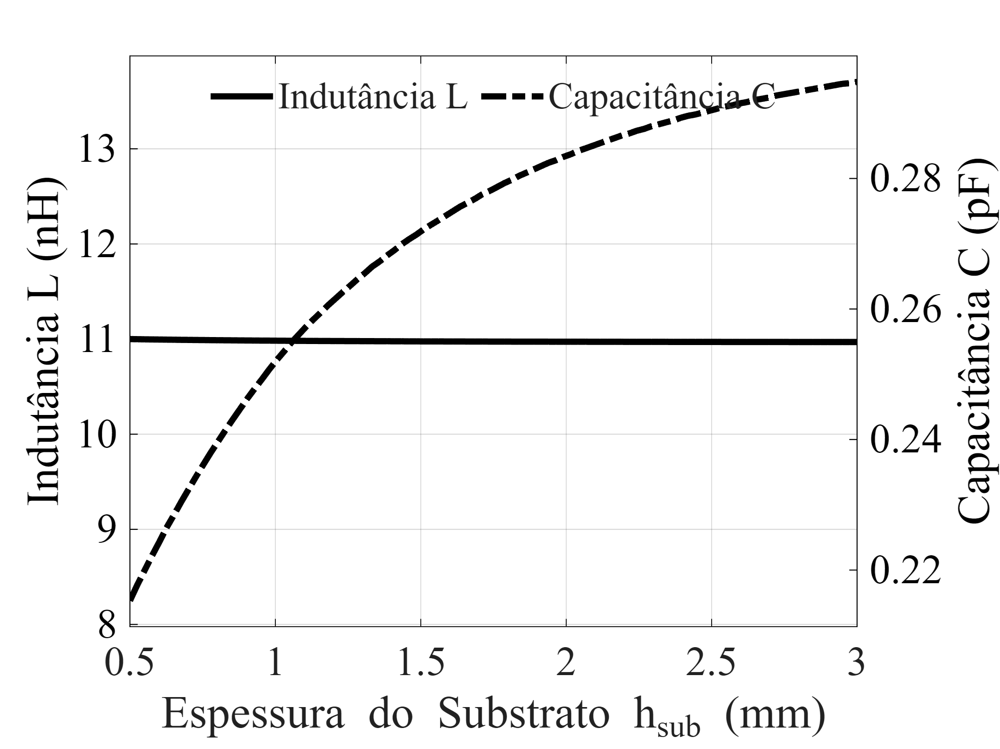
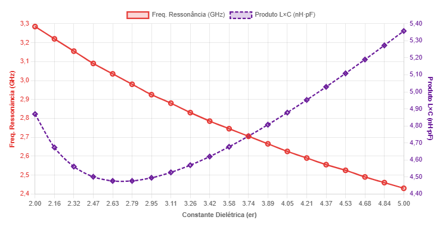
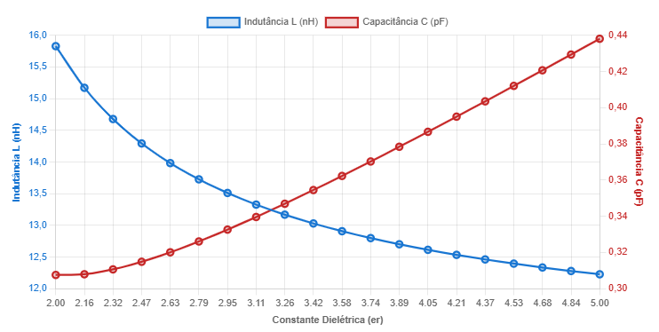
Nas Figuras 5(a) e (b), o aumento da espessura confina o campo, elevando \(C\). A Cruz de Jerusalém apresenta uma complexidade analítica superior no cômputo da permissividade efetiva, pois o fator de decaimento de Costa (\(\alpha\)) não é estático; ele é interpolado dinamicamente no intervalo de \([17, 22]\) em função da razão de aspecto da própria espessura geométrica.
3. Análise Paramétrica da Estrela de 4 Pontas
A geometria da Estrela de 4 Pontas (tapered star) introduz múltiplos pontos de acoplamento capacitivo parasita. Cenário paramétrico fixado: \(p = 21\) mm, braço total \(a = 18\) mm, ponta \(b = 2\) mm e bloco central \(s = 2\) mm (Substrato \(h_{\mathrm{sub}} = 1{,}52\) mm, \(\varepsilon_r = 3{,}0\)).
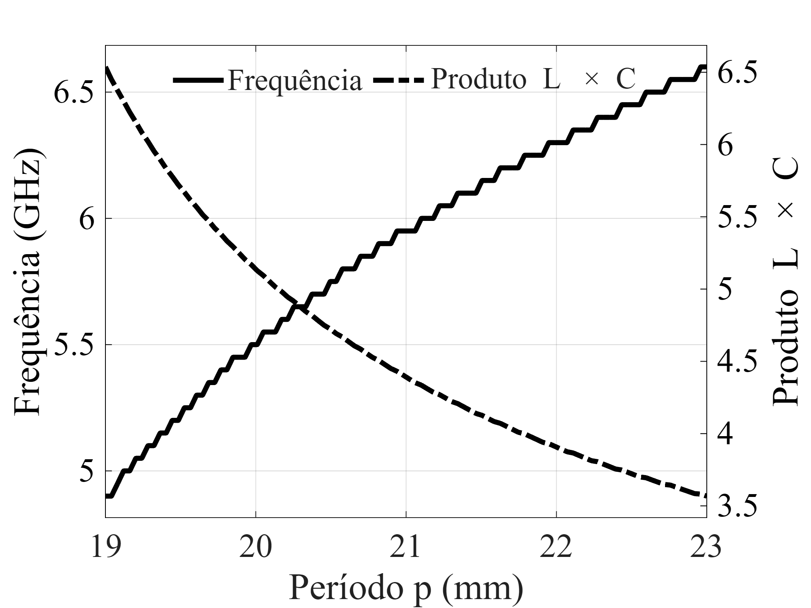
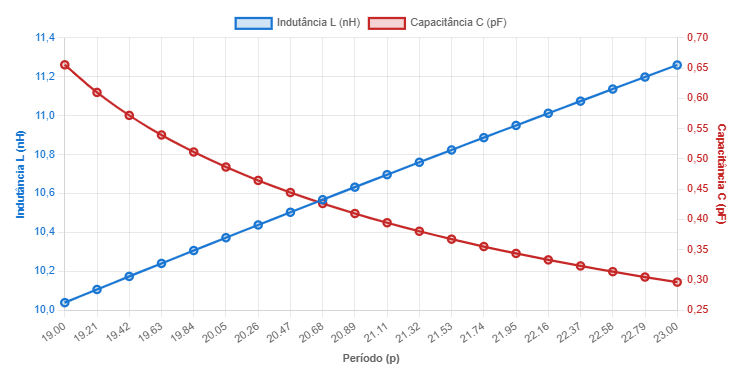
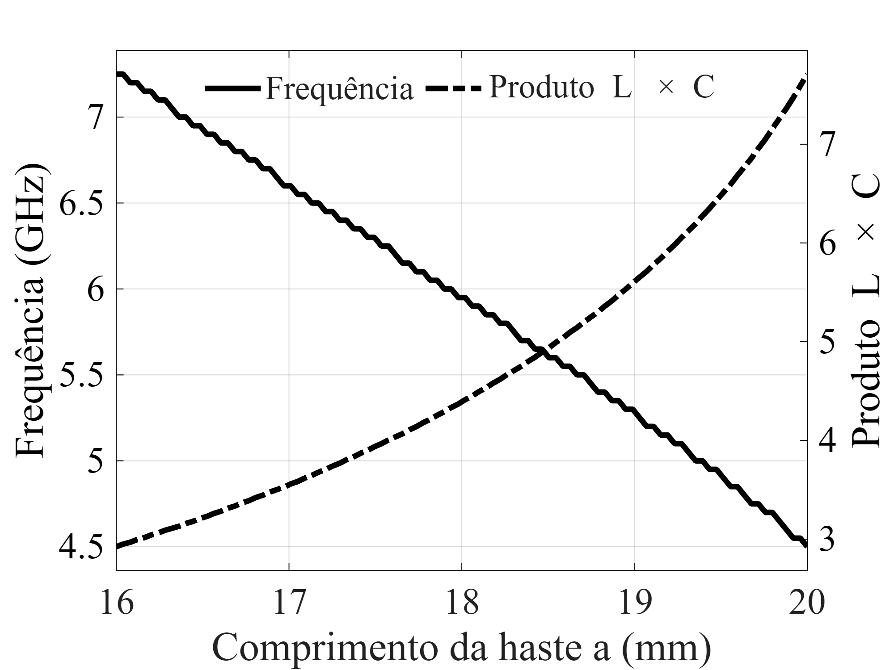
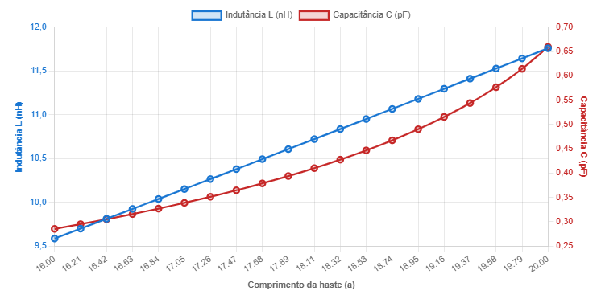
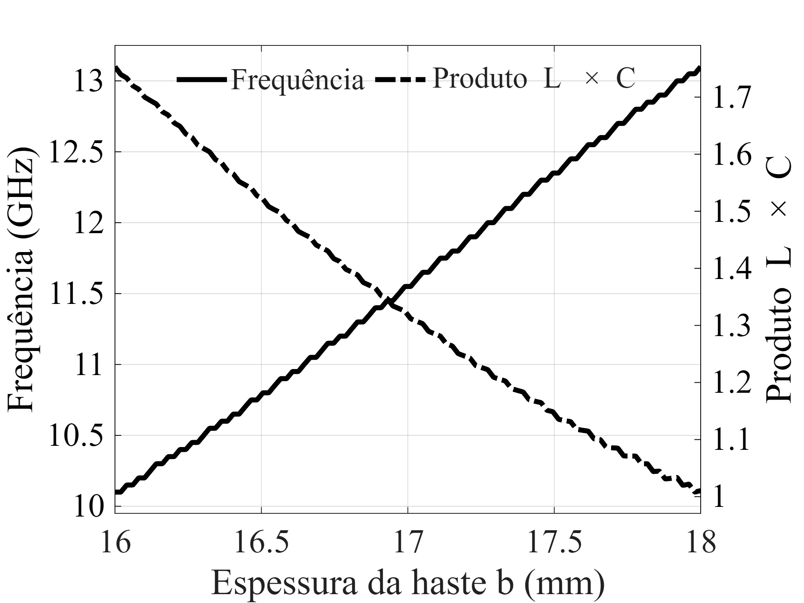
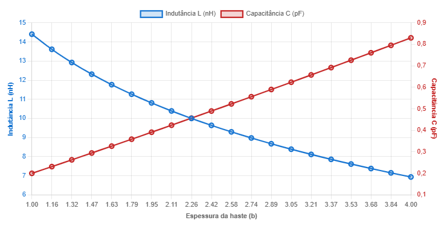
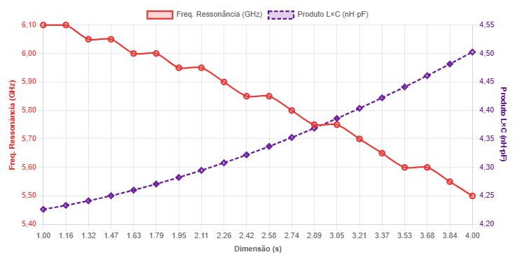
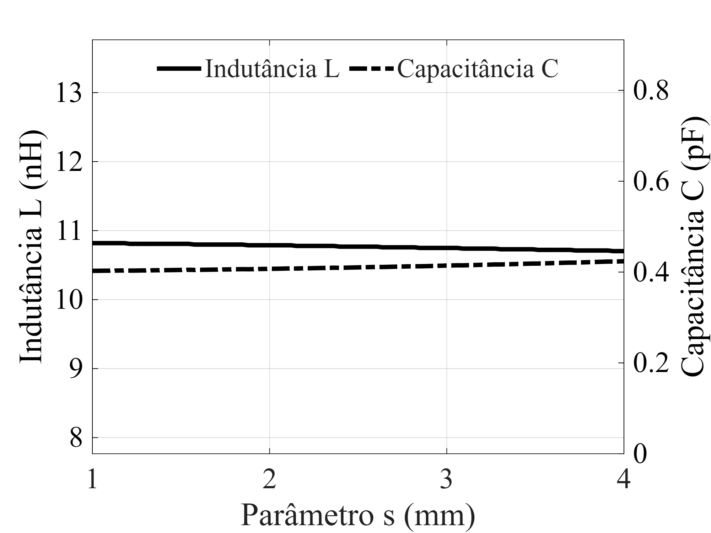
Efeito da Variação da Periodicidade (\(p\))
O aumento de \(p\) alarga simultaneamente as três fendas (\(g_{f1}\), \(g_{f2}\) e \(g_{f3}\)). As funções espaciais sofrem uma brutal atenuação devido à dispersão das linhas de campo. O decréscimo unificado do produto \(L \times C\) projeta o filtro diretamente para frequências mais altas.
Efeito da Variação do Comprimento do Braço Total (\(a\))
A variação da envergadura principal (\(a\)) é o vetor fundamental para a miniaturização extrema. Braços mais longos suportam uma maior densidade de corrente (aumentando \(L\)). No domínio elétrico, aproximar a ponta do braço aos limites da célula estreita agressivamente a fenda extrema (\(g_{f1} = p - a\)), inflacionando a capacitância exponencialmente. O somatório desloca a operação drasticamente para a faixa inferior.
Efeito da Variação da Espessura da Ponta (\(b\))
O engrossamento da ponta (\(b\)) reduz a frequência de ressonância. O alargamento de \(b\) estreita a fenda lateral paralela ao corpo da haste (\(g_{f2} = p - b\)), incrementando massivamente a capacitância equivalente e superando a leve atenuação da indutância.
Efeito da Variação da Dimensão Central (\(s\))
Aumentar o núcleo (\(s\)) resulta num decréscimo suave (ajuste fino). Expandir o miolo diminui fisicamente a fenda central equivalente (\(g_{f3} = p - s\)). A indutância (\(L\)) apresenta-se praticamente estática ao longo de toda a varredura, uma vez que o redimensionamento do bloco não prolonga o caminho condutor longitudinal primário.
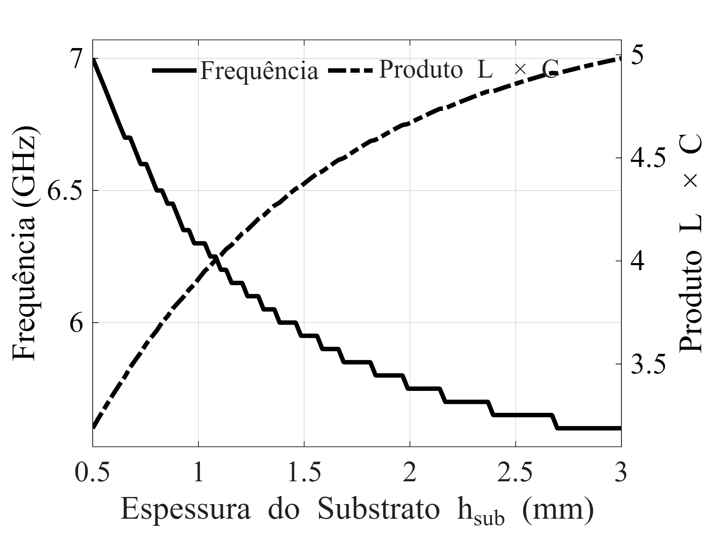
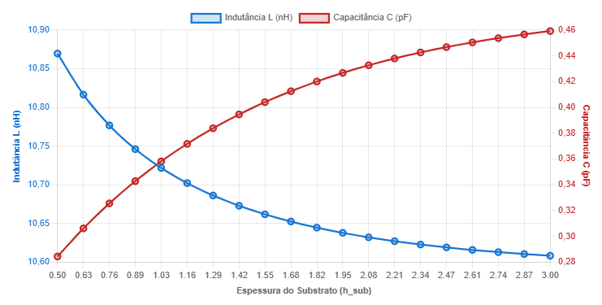
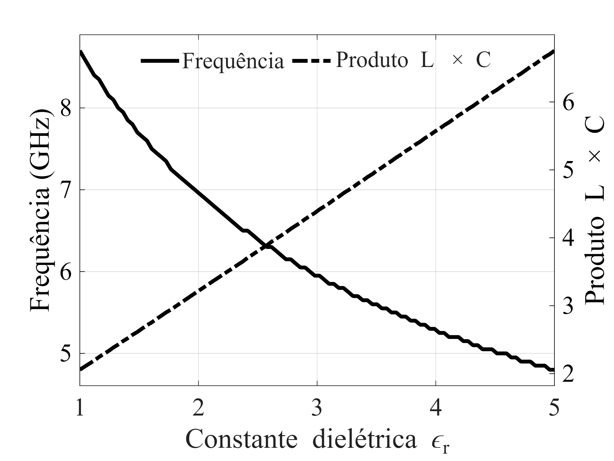
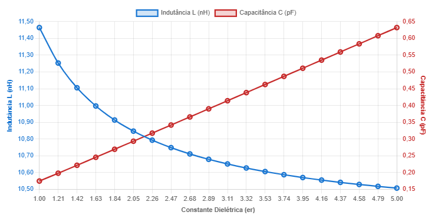
O confinamento das linhas de campo exibe uma ascensão capacitiva que é abruptamente freada para espessuras maiores. O termo de correção de Mamedes baseia-se na subtração de uma parcela exponencial negativa: \(\varepsilon_r - (\varepsilon_r - 1) e^{-M \frac{10\,h_{\mathrm{sub}}}{p}}\) (onde \(M = 1{,}9\)). Com o aumento da constante dielétrica, o comportamento é puramente linear.
Síntese da Análise Paramétrica
A análise paramétrica sistemática apresentada neste estudo revelou de forma quantitativa como cada variável geométrica e dielétrica governa o comportamento ressonante das estruturas FSS estudadas. O mapeamento detalhado das influências de periodicidade (\(p\)), dimensões do elemento ressonante e das propriedades do substrato permitiu estabelecer um entendimento físico robusto sobre os mecanismos de sintonia das topologias de Espira Quadrada, Cruz de Jerusalém e Estrela de 4 Pontas.
Com a base teórica consolidada, tornou-se possível identificar quais parâmetros possuem maior sensibilidade para o ajuste de frequência, fornecendo as diretrizes fundamentais para a etapa de projeto. Essa investigação demonstrou que, enquanto as dimensões das trilhas e fendas controlam a resposta capacitiva e indutiva primária, a permissividade efetiva do substrato atua como um fator corretivo determinante para a estabilização da frequência de ressonância em ambientes de impressão real. Este conjunto de conhecimentos empíricos e analíticos constitui o alicerce para a utilização do FSS Explorer, que será empregado para a sintonia fina das geometrias conforme as especificações de desempenho requeridas.